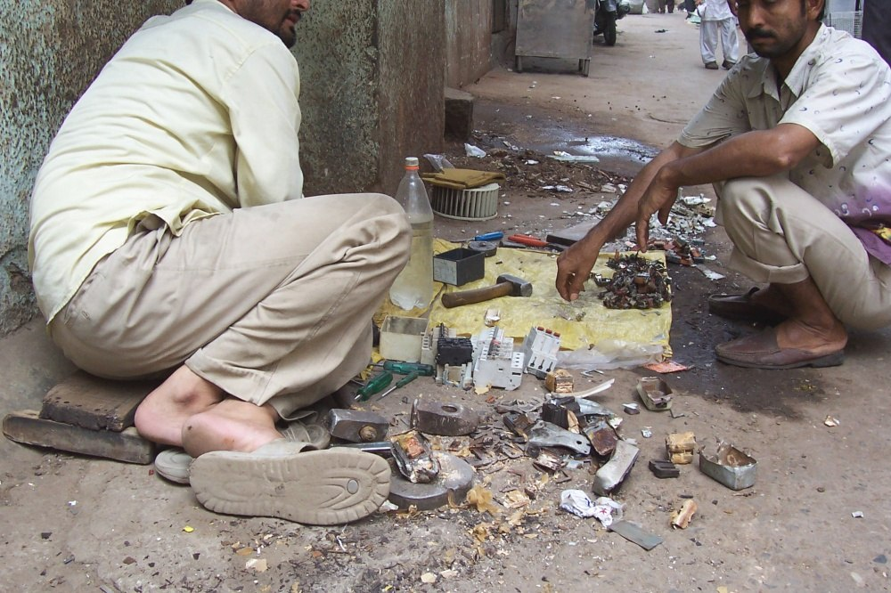
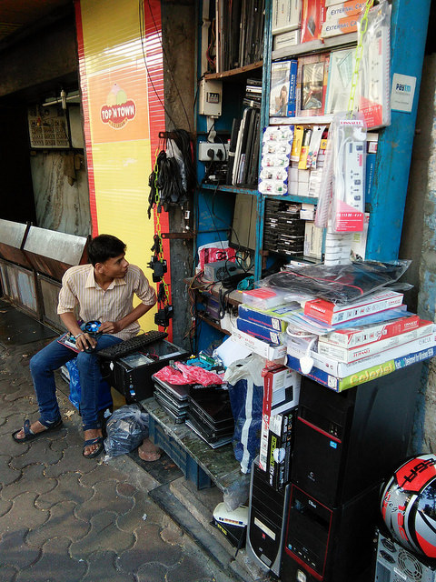
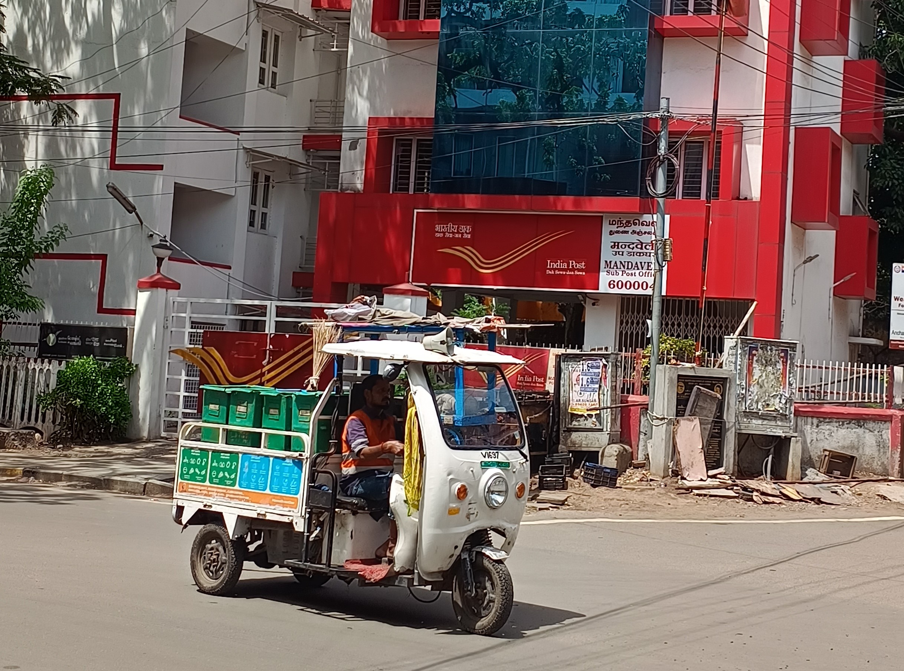

- Subject: E-Waste Management & Environmental Spatial Informatics
- Author / Researcher: Shubham Singh
- Methodology: Multi-Criteria Evaluation (MCE) & Spatial Point Analysis
- Study Unit: 24 Administrative Municipal Wards (Wards A to T)
- Projected CRS: WGS 84 / UTM Zone 43N (EPSG: 32643)
Key Objective: Develop an empirical, reproducible GIS framework to pinpoint e-waste generation clusters, assess formal accessibility deficits, and classify urban risk zones.
Ground Truth Context
Greater Mumbai Metropolitan Area (MCGM / BMC)
458.28 km² • 12.42M Inhabitants • 24 Municipal Administrative Wards
Good morning respected evaluators. Today I present our project on GIS-Based Multi-Criteria Analysis for E-Waste Hotspot Identification in Greater Mumbai. This work bridges environmental policy with practical spatial analytics to target e-waste management infrastructure where it is needed most.
- Global Generation: 62 million metric tons generated in 2022; projected to exceed 82 million tons by 2030 (UN E-Waste Monitor).
- India's Role: 3rd largest generator globally (>1.7 million tons/year).
- Mumbai's Profile: Single largest generating urban agglomeration in India (~114,000 tons/year).
- The Toxicity vs Resource Paradox:
• Toxic components: Lead, mercury, cadmium, hexavalent chromium, BFRs.
• Valuable resources: Copper, gold, silver, palladium.
When e-waste is improperly handled, toxic constituents contaminate air, soil, and coastal aquifers while critical raw materials are lost to open landfills.

Ground Truth Investigation
Informal E-Waste Dismantling Workshop (Dharavi, Mumbai)
Manual desoldering of circuit boards, cable stripping & hazardous recovery
E-waste is growing 3 times faster than standard municipal solid waste. In a hyper-dense coastal megacity like Mumbai, unmonitored disposal creates acute environmental and toxicological risks.
- Informal Sector Dominance: 85% to 90% of Mumbai's e-waste is captured by informal kabadiwalas and unorganized scrap aggregators.
- Crude Recycling Hazards: Manual acid leaching and open burning of insulated cables release carcinogenic dioxins and heavy metals into drainage nullahs.
- Infrastructural Vacuum: Formal MPCB collection centers are geographically sparse, non-incentivized, and poorly publicized.
- Lack of Spatial Intelligence: Blanket municipal waste policies fail to account for severe localized disparities across administrative wards.
Core Research Question: Which wards within Greater Mumbai represent potential e-waste hotspots, and what geographic and socioeconomic factors drive this vulnerability?

Commercial Scrap Source
Lamington Road Wholesale Electronics Bazaar (Ward D)
Hub for obsolete IT componentry, PC trade, and unregulated repair scrap
The core dilemma in Mumbai is spatial: formal facilities are located in upscale zones or distant industrial estates, while informal processing hubs thrive in dense, vulnerable informal settlements.
- Administrative Framework: 24 Municipal Wards (Wards A through T).
- Total Population: 12,419,447 residents across 458.28 sq km.
- Zonal Classification:
• South Mumbai (City): Wards A to G (Heritage commercial, Lamington Road, Dharavi).
• Western Suburbs: Wards H to R (BKC financial hub, SEEPZ, dense residential).
• Eastern Suburbs: Wards L to T (Kurla scrap market, Deonar dumping vicinity, Powai tech corridor).
- Projected Coordinate System: WGS 84 / UTM Zone 43N (EPSG: 32643).
Map 1 establishes our 24 administrative wards. We utilized UTM Zone 43N to ensure that all distance, area, and buffer calculations maintain planar metric precision.
- Step 1 — Spatial Database: 24 Wards, 128 geocoded point sources, 14 authorized facilities.
- Step 2 — Proximity & Buffer Analysis: 500m (pedestrian), 1km (neighborhood), 2km (suburban) service coverage zones.
- Step 3 — Kernel Density Estimation (KDE): Bivariate Gaussian intensity surface weighted by generation volume.
- Step 4 — Spatial Aggregation: Tabulation of sources, generation, and accessibility gaps per ward.
- Step 5 — Multi-Criteria Formulation: Linear Weighted Combination of 5 normalized criteria.
Our methodological pipeline connects raw spatial boundaries and point registries with spatial buffering, nearest neighbor algorithms, and kernel density estimation.
- Only 11.2% Formal Channel Usage: Almost exclusively restricted to large IT enterprises requiring corporate EPR destruction certificates.
- Dominant Residential Pathways:
• Hoarded in Cupboards/Drawers: 17.5%
• Sold to Informal Kabadiwalas: 27.5%
• Retail Exchange Buyback: 19.9%
- High Repair Shop Diversion: 68% of broken componentry from local repair centers is sold directly to informal scrap dealers.
- Regulatory Knowledge Deficit: Over 80% of citizens have little to no actionable awareness of formal e-waste drop facilities.
Authorized Infrastructure
State-of-the-Art MPCB Authorized E-Waste Processing Plant
Automated PCB sorting conveyor, air filtration & worker protective equipment
The primary survey reveals that convenience and financial compensation dominate citizen decision-making. People hoard devices or sell them to kabadiwalas because formal drop points are physically inaccessible.
- 500m Buffer: Immediate pedestrian walking catchment (5–7 minutes).
- 1km Buffer: Neighborhood accessibility boundary.
- 2km Buffer: Suburban travel limit.
- Severe Spatial Deserts Identified:
• Ward M/East (Govandi/Deonar): 87.2% unserved (>1km); 5.62 km to nearest facility.
• Ward S (Powai/Bhandup): 77.8% unserved area.
• Ward P/North (Malad): 76.8% unserved area despite 941k population.
Map 3 illustrates the severe service buffer deficit. The blue concentric rings show that large swathes of the eastern and western suburbs fall completely outside authorized collection zones.
- Continuous Spatial Modeling: Bivariate Gaussian KDE evaluated across a 500m spatial grid.
- Three Dominant Generation Cores:
1. Core 1 (South Commercial Core): Lamington Road hardware market and Lohar Chawl wholesale hub.
2. Core 2 (Western Industrial Tech Core): Andheri East, SEEPZ, and Marol MIDC IT complexes.
3. Core 3 (Central Scrap Core): The Kurla CST Road and Dharavi 13th Compound dismantling corridor.
Kernel Density Estimation moves beyond rigid ward borders to reveal actual continuous clusters of intensity. As seen in Map 6, three hot cores drive Mumbai's e-waste dynamics.
EHI = 0.30 G + 0.25 P + 0.20 C + 0.15 D + 0.10 A
- G — Generation (30%): Total monthly material mass flow (kg/month).
- P — Population Density (25%): Human exposure and consumer volume.
- C — Commercial/Industrial (20%): Enterprise IT turnover and retail stores.
- D — Disposal Risk (15%): Presence of informal scrap dealers, open burning, and dumps.
- A — Accessibility Deficit (10%): Distance to facility and % unserved buffer area.
All variables were scaled between 0 and 1 using linear min-max normalization. Figure 2 shows the exact stacked contributions of each of the five criteria for the top ten wards.
- Risk Classification:
• High Risk (0.60–0.80): 4 Wards (16.7%)
• Moderate Risk (0.40–0.60): 8 Wards (33.3%)
• Low Risk (0.20–0.40): 11 Wards (45.8%)
• Very Low Risk (0.00–0.20): 1 Ward (4.2%)
- Top 4 Priority Hotspot Wards:
1. Ward L (Kurla): EHI = 0.7719
2. Ward K/East (Andheri East): EHI = 0.7516
3. Ward G/North (Dharavi): EHI = 0.7248
4. Ward M/East (Govandi/Deonar): EHI = 0.6385
Map 8 is our primary project output. Four wards emerge in orange as High Risk: Kurla, Andheri East, Dharavi, and Govandi. These four wards require the immediate focus of municipal solid waste authorities.
- Ward L (Kurla — Rank #1): Convergence of extreme density (56,743/sq km), 902k residents, major informal scrap dismantling market along CST Road, and Mithi River dumping vulnerability.
- Ward K/East (Andheri East — Rank #2): Highest monthly e-waste volume (636.5 Tons/mo) driven by SEEPZ electronics SEZ and MIDC corporate hardware turnover.
- Ward G/North (Dharavi — Rank #3): National hub of informal plastic and circuit recycling (13th Compound) operating in hyper-dense residential slums (65,828/sq km).
- Ward M/East (Govandi/Deonar — Rank #4): Environmental justice hotspot; highest facility distance (5.62 km) and 87% unserved area near Deonar dumping ground.
Each hotspot has unique geographic characteristics: Kurla and Dharavi are informal scrap aggregators; Andheri East is an industrial and corporate generation giant; Govandi suffers from severe infrastructure deprivation.
- Tested Against 4 Distinct Models:
• Model 1: Baseline (0.30G, 0.25P, 0.20C, 0.15D, 0.10A)
• Model 2: Informal Risk Focused (0.25D, 0.15A)
• Model 3: Generation & Pop Focused (0.40G, 0.30P)
• Model 4: Equal Weights (0.20 each)
- Exceptional Spearman Rank Correlation:
• Baseline vs Model 2: r = 0.9643
• Baseline vs Model 3: r = 0.9904
• Baseline vs Model 4: r = 0.9530
- Rank Stability: The top 4 priority hotspots remained completely unchanged across all model permutations!
To ensure scientific credibility, we performed sensitivity analysis. As Figure 6 shows, ward priority ranks remain remarkably consistent, proving that the results are not biased by subjective weight selection.
- Built with Leaflet.js: Interactive web map operating directly in any browser without server dependencies.
- Key Interactive Capabilities:
• Click-to-inspect ward sidebar with full EHI score and (G, P, C, D, A) metric breakdown.
• Interactive layer toggles for 1km Walkable Buffers, Point Sources, and Recyclers.
• Quick-jump navigation panel for Top 10 Hotspots with map zoom animations.
• Real-time population, volume, and service deficit KPI statistics.
Available at: dashboard/index.html
We also built a standalone WebGIS dashboard that allows decision-makers to interactively click any ward, inspect its multi-criteria breakdown, and view tailored recommendations.
- Ward L (Kurla CST Road): Form an Authorized Scrap Aggregator Cooperative; offer fair-market buyback prices to incentivize informal dealers into legal reverse supply chains.
- Ward K/East (Andheri SEEPZ/MIDC): Institute mandatory corporate EPR asset auditing to prevent institutional IT liquidation into uncertified hands.
- Ward G/North (Dharavi 13th Compound): Upgrade informal sheds into a regulated "Green Dismantling Cluster" equipped with mechanical shredders and worker PPE.
- Ward M/East (Govandi/Deonar): Deploy bi-weekly municipal mobile collection vans to bridge the 5.6 km facility void and eliminate perimeter wire burning.
- Suburban Corridors: Install dedicated e-waste drop bins at all Western and Central railway stations.

Logistics Deployment
MCGM Dedicated E-Waste Reverse Logistics Fleet
Mobile pickup vans connecting unserved suburban pockets
Our spatial findings translate into precision interventions rather than generic advice. Formalizing the informal economy in Kurla and Dharavi, enforcing corporate EPR in SEEPZ, and deploying mobile vans in Govandi will produce immediate environmental benefits.
- ✓ Successfully developed a practical, reproducible, GIS-based multi-criteria spatial framework for Greater Mumbai.
- ✓ Produced 8 publication-grade cartographic maps (300 DPI) and 7 statistical figures.
- ✓ Formulated and validated the E-Waste Hotspot Index (EHI), demonstrating high mathematical robustness ($r_s > 0.95$).
- ✓ Provided actionable, location-specific spatial recommendations for municipal authorities and recyclers.
Thank you! Open for Questions and Discussion.
To conclude, this project proves that GIS spatial analysis is an indispensable tool for urban environmental management. It empowers municipal bodies to transition from passive regulation to targeted, proactive interventions. Thank you very much, and I welcome any questions from the panel.